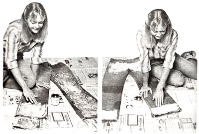

You can beat the thorny problems that go with summer berry picking. . . for less than $3.00.
In late summer and early autumn, giant succulent blackberries-suspended tantalizingly from thorny canes-lure me into the bristly thickets near my Wisconsin home. And at the end of each expedition I used to crawl out of the prickly patches, clutching both my hard-earned half-bucket of berries and two thorn-scarred legs that looked as if I'd meandered into the midst of an inprogress cat fight!
I first tried to thwart the bushes by donning three pairs of trousers to protect my vulnerable shins . . . but the weight and heat of those leggings proved to be almost as unbearable as the prickly thorns. Furthermore, the layers of clothing became particularly uncomfortable in the early morning dew . . . and I soon found that few things take the joy out of woods-roaming more thoroughly than creeping around in three pairs of soggy drawers.
Soon thereafter, though-quite by accident-I finally discovered the solution that now allows me to tramp unscathed through the thickest of blackberry brambles. It all started when a pair of my well-worn blue jeans developed a severe tear during an unexpected encounter with a barbed wire fence. Rather than sew up the laceration, I temporarily glued a patch over it with some fabric cement. To my amazement, the repair stayed on as if it'd grown there . . . and even repeated trips through the washing machine and clothes dryer failed to dislodge the stubborn mend. With some curiosity, then, I examined the patch . . . and saw that the adhesive had completely penetrated the fabric, making the material both water proof and extremely tough.
"Aha," I reasoned, "if I coat the front of my jeans with the rubbery substance, I'll have a durable and inexpensive pair of berry-picking pants!" So I applied some more fabric cement to my old dungarees, and found to my delight that the covering repelled the sharpest thorns and even helped keep me dry while I walked through rain-soaked thickets.
Since my first experiment, I've refined the technique that transforms ordinary denims into brush-buster britches. The only items required are an old pair of pants (jeans work best, but any trousers made of a heavy material will do), some newspaper, and a sixounce bottle of fabric cement. There are several brands of the adhesive on the market, but I prefer Val-A Tehr-Greeze, which is available for about $2.40 a bottle at most hardware stores, canvas and awning supply shops, and shoe repair services.
To construct a pair of brush-busters yourself, assemble the materials and then spread newspaper over your work surface. (I usually use the floor for this operation, but a wide table would also suffice.) The next step is extremely important: Place several thick folds of newspaper inside the pant legs to prevent the cement from bonding the layers of cloth together. [EDITOR'S NOTE: A spokesman for the Val-A Company, manufacturer of Tehr-Greeze, concurred with the author's instructions, saying that the latexbased product is an exceptionally aggressive bonder for which there is no known solvent. Persons who use Tehr-Greeze should be careful not to spill the fabric cement on the floor or to apply it to any garment they may later wish to restore to its original condition, since the substance simply can't be removed.]
After you've readied the jeans, place them-zipper side up-on your work surface, and squirt about one-quarter of a bottle of fabric cement on the front of each leg. You can paint the milky substance on with a brush, but I've had better success spreading it with my fingers. Smear the liquid until the fabric is evenly coated from the top of the thigh to the hem . . . then quickly wash your hands or brush in warm water. After ten minutes or so, the rubbery compound will dry and become transparent.
I usually coat the seat and the back cuff area as well as the front. This provides adequate "rear guard" protection while still permitting the pants to breathe through the untreated material at the back of the legs.
You'll notice that the coated cloth has a slightly "tacky" feel to it at first, but this will disappear as the britches are worn. Although I've washed my armored jeans at all temperatures and dried them without harm in an electric clothes dryer, I'd recommend that the pants be laundered in warm water and hung out to dry on a clothesline. [EDITOR'S NOTE: The makers of Tehr-Greeze say that treated fabric should never be dry cleaned, because the solution used in that process makes the latex cement `gooey".]
I originally used my briar-beaters for stalking elusive berries, but I've since found some other purposes for them as well. The britches are great for working in the garden, since the earth's dampness won't penetrate the cloth when you stoop or kneel. The reinforced trousers are also useful when tackling any messy chore such as painting or changing the car's oil. Cleaning up after the job's done is a snap . . . you can just scrub the treated material lightly with the appropriate cleanser and sponge away the grime and grease! In fact, I was so taken with the miracle cement's ability to repel moisture that I coated a lightweight parka with the substance to make a very snug, inexpensive rain suit that keeps me dry in the worst of storms.
Now that the berries are brightening in their thorny lair, why not earmark an old pair of denims for your own brush-buster britches? For a $3.00 investment you'll have an "ironclad" excuse to gather the woodland bounties of summer!
EDITOR'S NOTE: Berry fans will appreciate the article on page 164.
|
 |
|
|